Chapter 2
Growing the Art
Every sprite in the game is generated from data: genomes for creatures and plants, recipes for areas, and a stylise pass that turns them into pixel art.
Nothing you see in Coven Rush was painted by hand. Every wolf, oak, cairn, puddle, party witch and paper lantern is generated: a few numbers in a data file go into a generator, and the generator makes the sprite. The game asks for "a young boar facing away, frame 2, in party gear", and the art comes out of code that runs in the browser's art workers while you play.
That wasn't the plan on day one. Ed's first word on the art, on 3 October, was that it was "placeholder just to set the scene". But each placeholder was a small program rather than a picture, so it could always be improved, measured and checked. Over four days the programs became generators driven by data: species, trees, areas, props and witches all written as records. A separate pass, the stylise pass, then turns everything into one pixel-art look. This chapter is about how that happened.
From flat profiles to little 3D models
The first art pass #3 moved the Witch Art Lab's drawing code into a reusable art/generator.js and redrew the animals as smooth 2D outlines in side profile. Ed asked for more:
I think they should be more three-quarter view.Ed, 2026-10-03, quoted by the coordinator on #3
The builder tilted the profiles, and Ed came back: "I think we disagree on what 'three-quarter' means. They still seem flat, side on. It should be more like the reference." The reference was a sheet of farm animals by another artist, which the builders described in words and never committed. The suggestion was to stop drawing in 2D altogether: build each creature from simple 3D shapes, turn it, and draw one ray per pixel.
Within minutes the wolf, boar, owl and hare were 3D models. art/model3d.js still works that way today. A creature is a handful of ellipsoids, tapered rounded cones and rounded boxes, turned 35° (YAW 0.6 radians) and seen from 30° above (PITCH 0.52). Each pixel is one exact ray against those shapes. The first try read as "strings of balloons", so the shapes became a signed distance field, where parts in the same group melt into one mass, and wings and ears became flat shaped planes. The field gives a true surface direction at every pixel, so the normal map comes free and the game's lights fall on a sprite as if it were solid. Ed then asked for "turned towards" and "turned away" variants. With a 3D model that's just a second render, so every creature has both, mirrored for left and right.
On 4 October Ed found the levels too alike ("babies, youths, and adults look too similar"). #47 moved the young onto the old adult model and made new adults 1.65 times bigger, with heavier builds, bigger horns and a few glowing motes. A legend is never less than 2.2 times its adult. The art check has enforced those steps ever since: young at least 1.3 times the baby, adult at least 1.55 times the young, legend at least 2.1 times the adult.
The creature genome
On the morning of 5 October the creature work became a staged plan, issue #79: procedural creatures. Its first two stages #83 changed nothing you could see, which was the point. All 30 species were rewritten as genome records in art/genome/species.js. Each record holds a template, a builder, a palette, body and head proportions, parts (ears, tail, feet, horns, antlers, tusks), markings and what its legend grows. A tool, tools/genome/compare.mjs, drew every creature with the old code and the new one: 30 species, four levels, two frames, two facings, plain, in party gear and woken. All 1,560 of 1,560 sprites matched pixel for pixel. Since then, changing a species means editing its record, not its builder.
Templates, sockets and size curves
A template (art/genome/templates.js) is a body plan. There are six: quadruped, avian, flyer, serpent, insectoid and squat. Each names its builders, its sockets and the part tags each socket allows. A quadruped's tail can be a brush, a bob, a squirrel's or a dormouse's; its feet are paws or hooves. Each template also lists tags that can't go together, such as horns with antlers or tusks with antlers. genomeProblems rejects a record that breaks these rules.
The quadruped also carries size curves. Every per-level constant that had been written into the builder became four numbers, baby to legend, each multiplying the species' own proportion. A baby's head is 1.75 times the norm and its legs 0.55. A legend's body is 1.14 times as long, with a deeper chest and a head no bigger than its adult's. #86 tuned them so "babies [are] chunkier, legends grander", so a legend reads as tall and grand rather than as a big cute version.

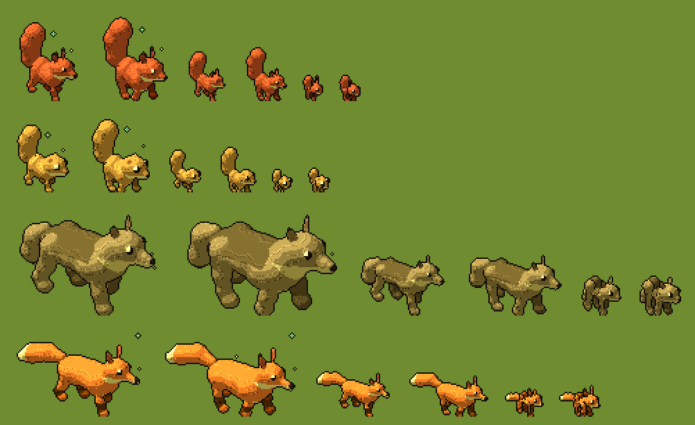

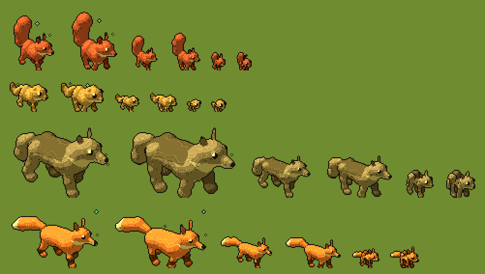
Masks and palette rows
Stage 2 pulled colour out of the shapes. bakeMask records which material each pixel is (body, belly, eye, horn, magic…) and whether it's an outline. A palette row gives each material its colour, then its outline colour. paintPixels on the CPU and PALETTE_GLSL on the GPU colour a mask from a row. The check proves that every species, at every level and facing, painted from its own row is exactly its normal bake. Once that held, a new coat cost a palette row rather than a redraw.
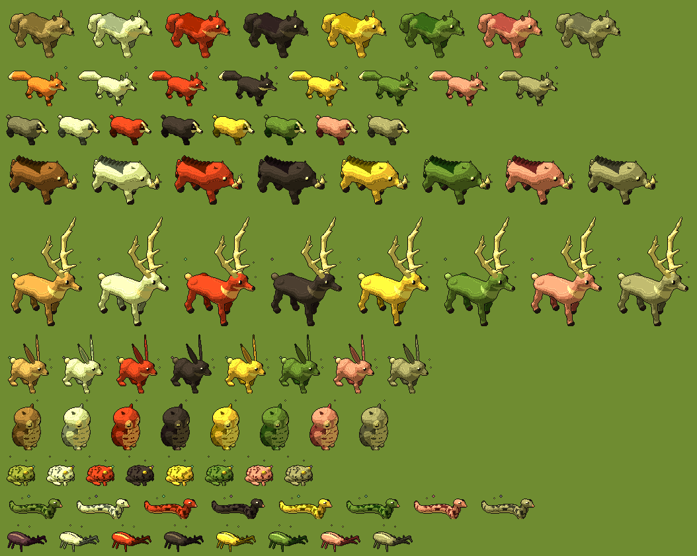
The silhouette check
Stage 3 added a test for whether you can tell the species apart by shape alone, at the size you see them. art/genome/silhouette.js shrinks each species' young and adult to a 24-pixel square and compares every pair by how little they overlap. Two closer than 0.15 fail the build. The check caught a real clash on its first run: as adults the dormouse and the squirrel were only 0.10 apart, because they shared a tail and a body. The dormouse got its own long, low tail curling up at the tip, and every pair has stayed at least 0.157 apart since.
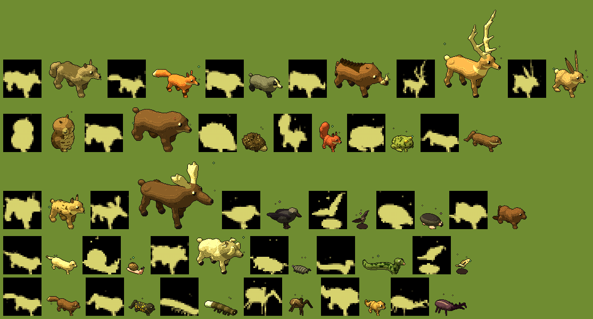
Here is the whole pipeline as it stands in the code, from a record to what the game draws:
One thing the diagram shows that's easy to miss: the material-mask path is a proven twin of the normal bake, not a replacement. The game bakes creatures with bake, which writes an albedo image and normal maps (one for each facing). The mask and palette row are what make cheap recolouring possible, and the check keeps the two identical.
Faces and fur
Ed wanted expressions to belong to the creature rather than sit on top of it: "The eyebrows should be with the creature generator." #110 gave every species four faces at every level: neutral; angry (brows down over narrowed eyes, red when a wave has woken it); happy (eyes closed up into smiling arcs, for party animals and friendly areas); and dazed (crossed-out or odd eyes, worried brows, while stunned). The face is built in 3D from the head and eye positions every builder already records, so a new species gets its expressions free. Strokes are also sized in pixels, so a baby beetle's scowl reads as well as an elk's.
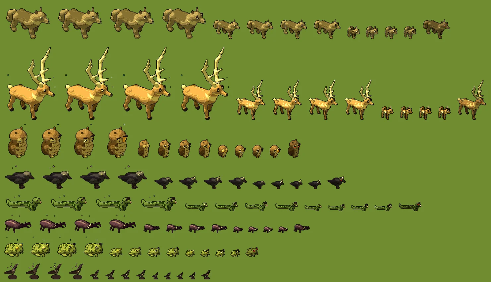
Fur came next, from issue #119, Ed's roadmap for the generators, where he put "best artwork over speed". A big creature had read as a smooth ball with contour lines. art/genome/texture.js gathers a coat's pixels into small cells shaped by its kind: strokes running back and down for fur, scallops for feathers, a diamond lattice for scales, segments for plates, bands round a whorl for a shell, long spines for bristles. Every pixel in a cell shares one normal, so the game's stepped light breaks along tufts instead of smooth rings. A baby's cells are coarse and soft and a legend's fine and rich.
Evolution, not enlargement
By the afternoon of 5 October the creatures had the right shapes and sizes, but an adult was still a bigger young. Ed asked for more:
I would emphasise the exaggerated silhouettes and the evolved design per stage (not just being larger) - the creatures, especially adult and legendary, can be quite fantastic with lots of details; not just 'large versions of the creature'.Ed, 2026-10-05, on #119
The answer was the evolution kit #139. A genome's levels holds four records, baby to legend. Each can override the species' proportions and add features, which evolve3d draws onto the right part of the model: mane (tapered spikes along the back), wisps (flames off tusks, horns or spine), stones (standing stones with moonlit runes), claws, moss, tails (a kitsune's fan of brushes), ruff, brambles and eyeglint, plus a twisted-horn part with a ram's curl. The art director wrote a brief for each species' four levels in docs/art-guide/EVOLUTIONS.md, and the builders followed them overnight.
The boar was the pilot. The target was a reference Ed shared of "three evolutions of a boar". The art guide describes it only in words: a round piglet with a few dark bands; a stocky adult with a shoulder hump and big curved tusks; and a top-heavy legend, head down as if about to charge, with enormous tusks curling past its head and pale flame-like wisps rising from their tips.
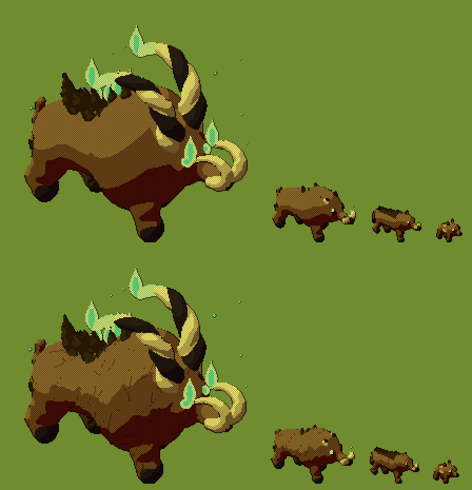
Then, between midnight and half past one on 6 October, the rest followed one after another. The badger #163 goes from a cub that's all face (its blaze 1.6 times oversized) to "the moor's walking stones". The snail #167 goes from a near-clear shell to a tower the forest built on its back. The fox #170 gains a ruff and a second tail as an adult, and becomes a kitsune legend with seven tails rooted along its rump, sweeping up together like flames with fox-fire at their tips. The ram, woodlouse, wolf and owl followed (#174, #175, #178, #179). Some first tries failed and went into the art guide's table of failures: kitsune tails splayed evenly from one root read as spokes, and in a neat fan as fingers.
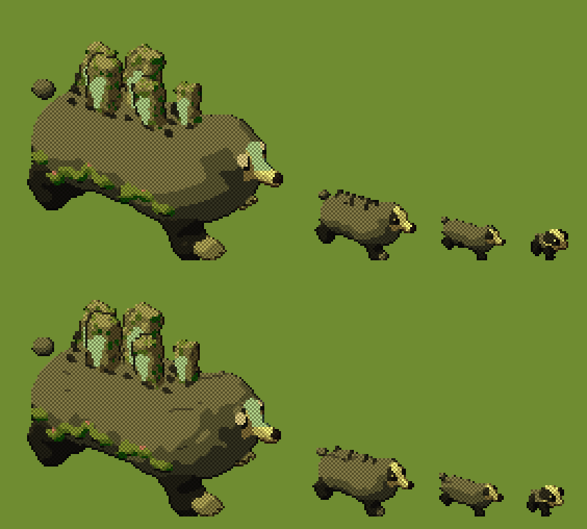
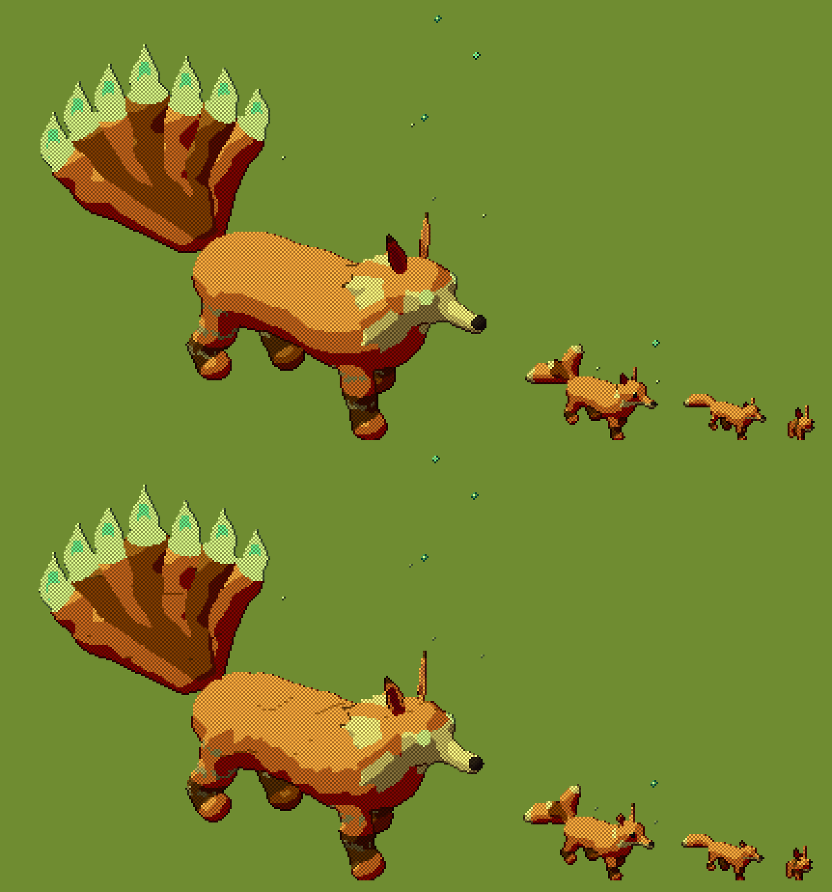
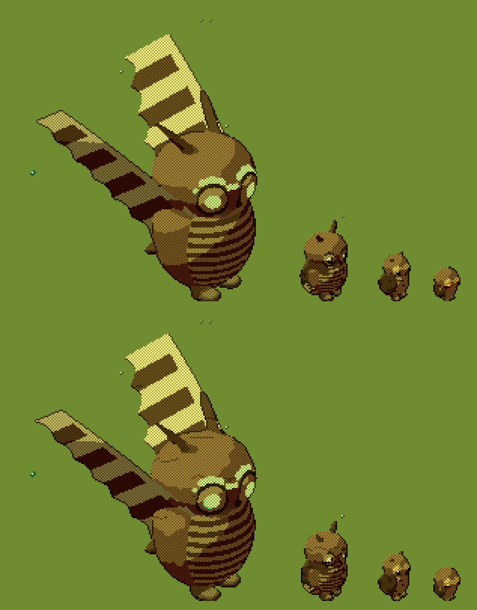

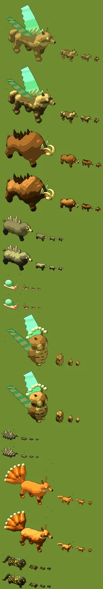

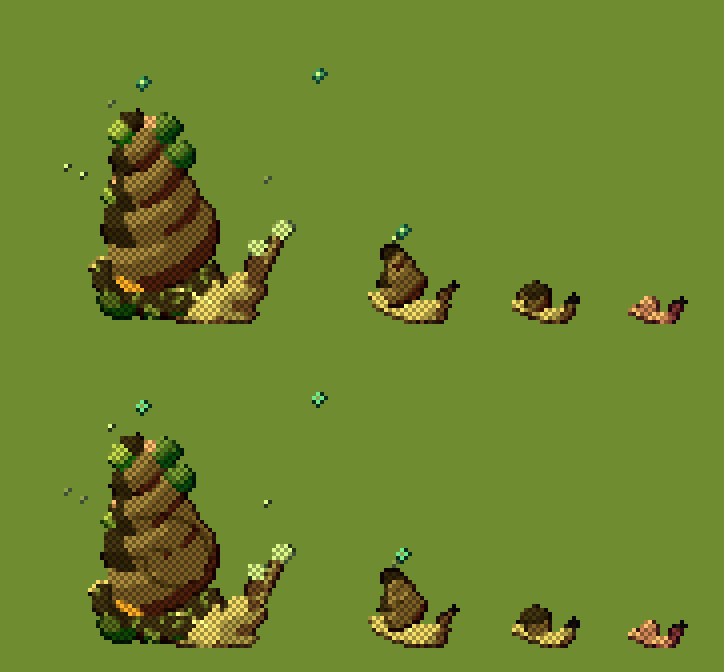

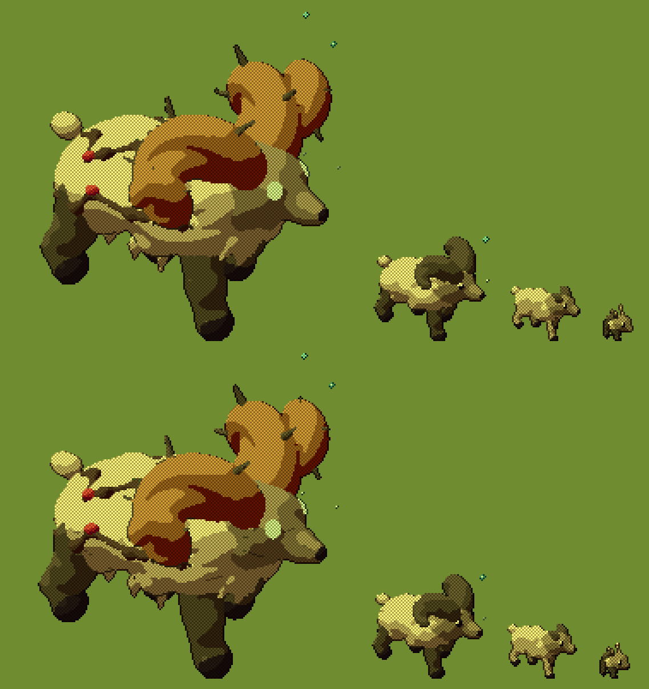

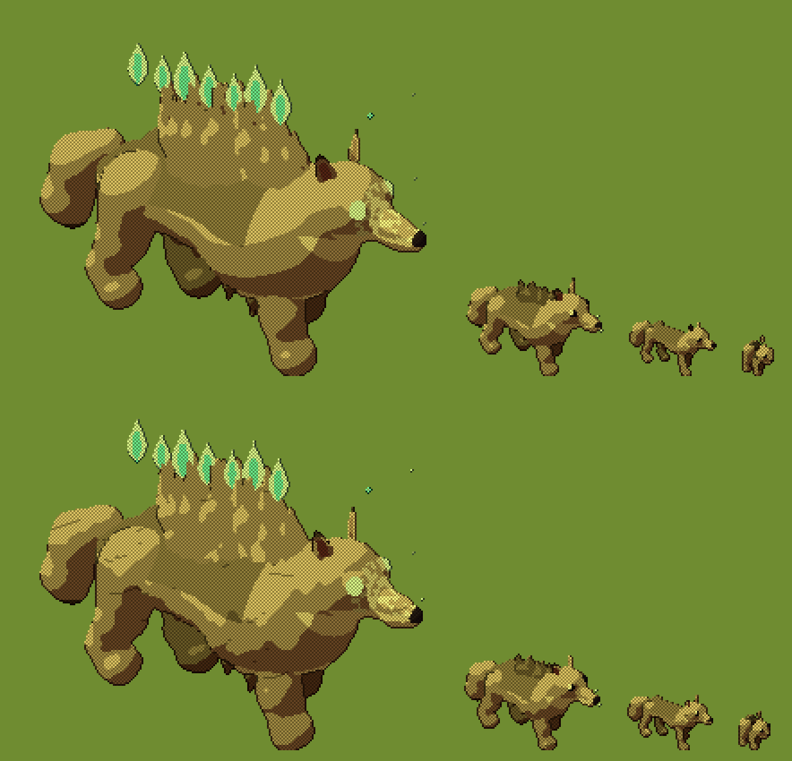

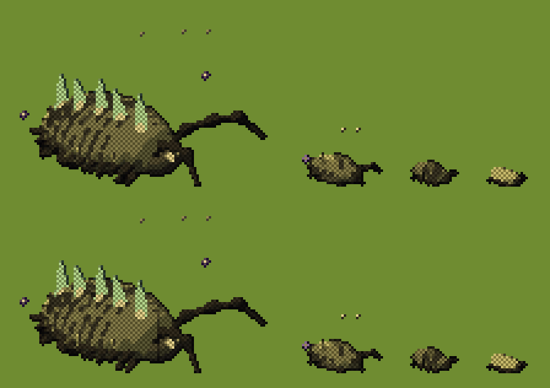
The live rig
Baked frames are cheap but stiff: a creature walking in two frames can't lean into a turn. Stages 4 and 5 of #79 #102 added the live rig. rigParts bakes a creature as pieces rather than whole frames. A four-legged animal is a torso, a head and a tail, each at five headings (the other three mirrored), each with its joint's pivot. Legs and snake bodies are chains of discs. The art workers bake one atlas page per species and level, keyed by the genome's hash. Each frame, src/render/rig/rig.ts puts the pieces together. The legs are two-bone chains stepping on a trot, a snake follows its head, and the body leans into acceleration, crouches before a charge, stretches in it and tucks its legs in a leap.
Ed asked for it live, and #113 turned it on by default the same afternoon. Legends are rigged at any size. Party animals and enraged ones are rigged too, with their gear or their red eyes baked onto the head piece. Anything drawn smaller than 40 art pixels keeps its baked frames. That evening the party animals got little shoes #149: trainers, glitter, platforms, heels, boots and light-ups, fitted to hoof, paw or claw, stepping with each leg.

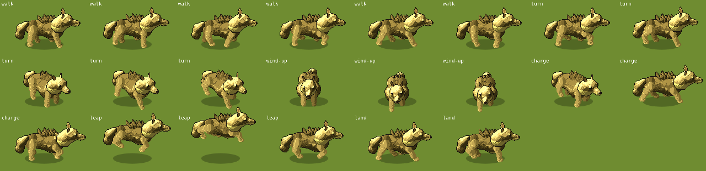

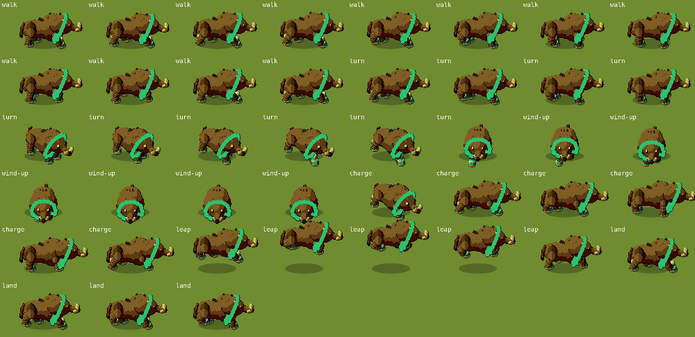

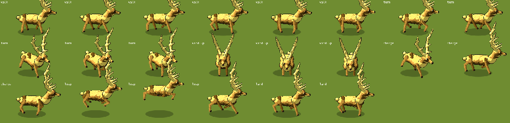

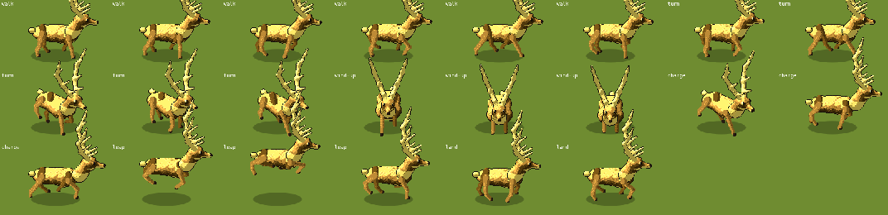
Growing the trees
The trees went through the same change from code to data, in step with the creatures. On 3 October Ed noted that "the forest feels like it only has a few kinds of tree … mostly stick to UK kinds of trees", and #22 added fifteen UK species, from oak and beech to Scots pine, yew and larch, with each wooded area naming a main kind.
On 5 October the flora work landed as four stacked PRs:
- Plant genomes #81: every tree and bush became a record in
art/flora/genomes.js. A fingerprint script hashed 736 drawings before and after, and all 736 matched. - The genome generator #85,
art/flora/blob.js: a tree grown from its record alone. Its wood is levels of branches in the Weber–Penn style: a trunk, then each level's children along their parent, sized by the crown's shape (cone, sphere, flame, even or cup). Its crown is 3 to 9 lit blobs at the branch tips, each filled with leaf stamps, little clusters of pixels with a lit and a dark edge, the whole blob lit in three tones from the upper left. Ten new species came with it, three of them fantasy: the glowcap (a mushroom tree with glowing gills), the crystal-leaf tree and the vinewood. - The pixel wind #88: see below.
- Area flora #95: each of the 26 wooded areas grows 3 to 6 species in its own palette, main kind first. Fantasy trees grow only as a minority where magic suits: glowcap in the hazel fairy rings, vinewood in the lost garden and holly thicket, crystal-leaf at the cave mouth.
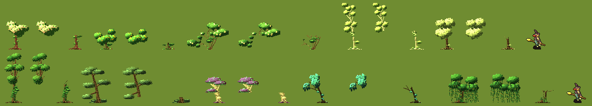
The pixel wind
Trees had swayed since 4 October #34, through sway masks: a grey map the size of the sprite, still at the trunk and moving most at the leafy tips. But a smooth per-pixel slide smears pixel art. #88 made each region of a sprite move whole: one of the generator's blobs, a vine, or, for older art, a cell of about 10 by 8 pixels. The mask's green channel carries each region's phase and stiffness, and the game's sprite shader shifts the region by 0, 1 or 2 whole art pixels, out of step with its neighbours.
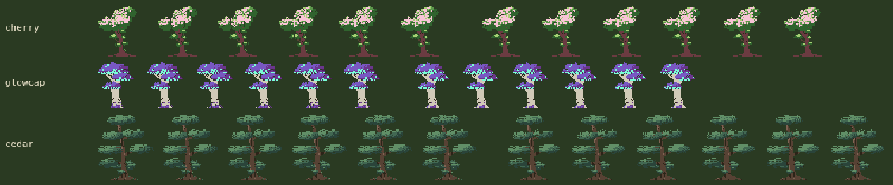
Everything onto blobs
On 5 October #128 moved the twelve trees that still had their own one-off generators (spruce, willow, birch, tree fern, field maple, alder, pine, yew, holly, weeping birch, larch and the gnarled broadleaf) onto the blob generator, then deleted the old code. To keep each species' character, the blob generator learned to fill crowns through an envelope: a spruce's drooping tiers each with a dark underside, a holly's cone, an alder's column, a yew's dome. The art guide had already recorded why the envelope mattered: an earlier blob holly, with blobs only at its branch tips, came out as topiary.

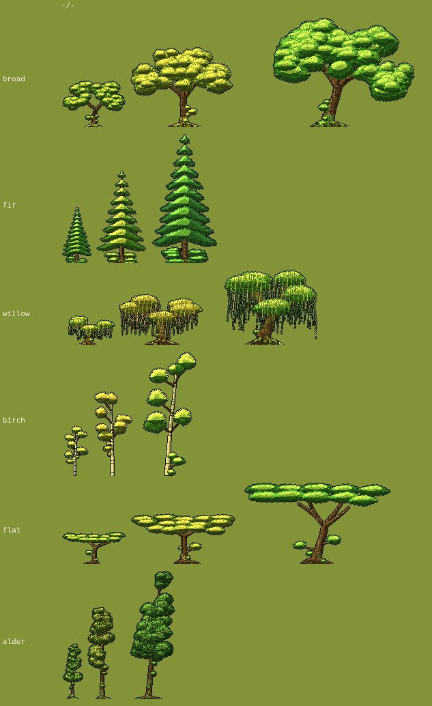

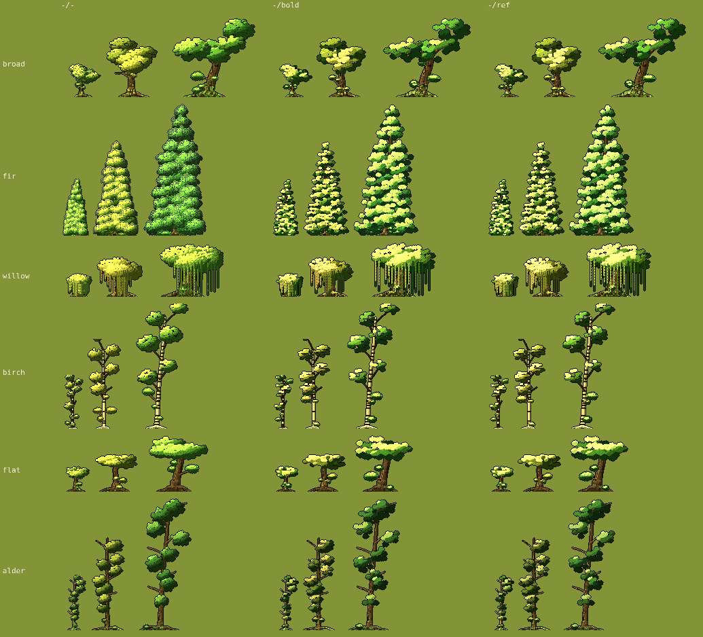
Only the nine broadleaf species (oak, beech, ash and six more) kept their own generator. #155 rebuilt their leaf clumps from the same leaf stamps, along with every tree's life below the crown (ivy, moss, sprigs, low boughs), which is there so that ground mode isn't a forest of bare poles. The bold style then turned their 20 to 40 small clumps into camouflage, so the art director chose option A, and #159 lit each broadleaf crown as one shape: cream on its top left, shaded to the lower right, its tones clustered.

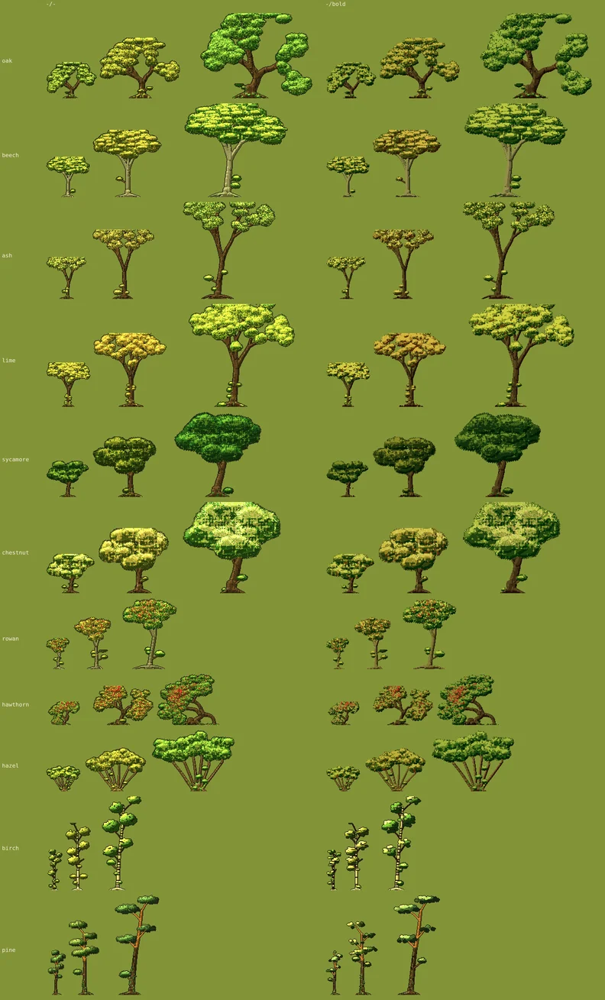

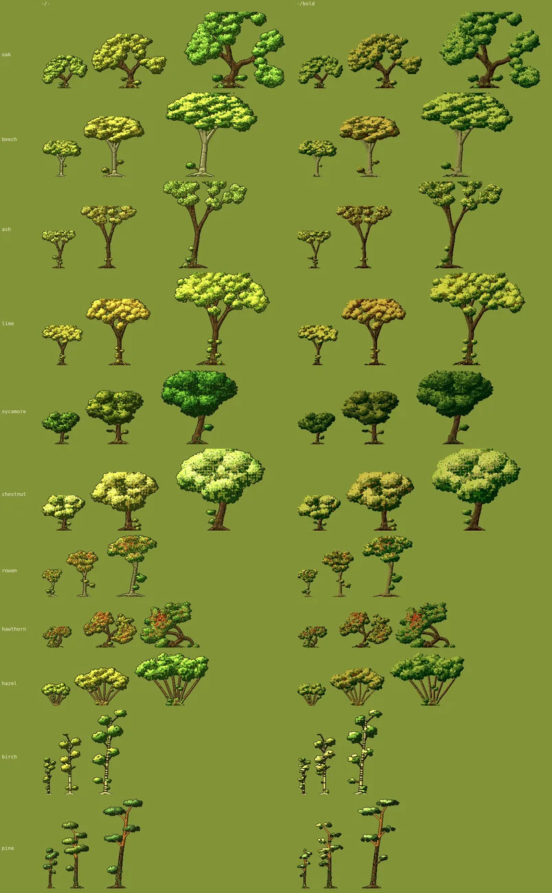

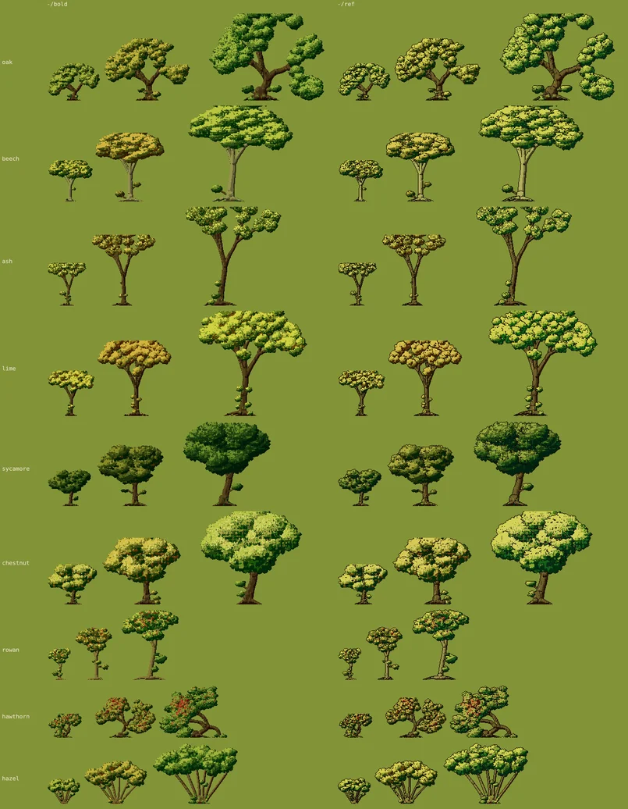

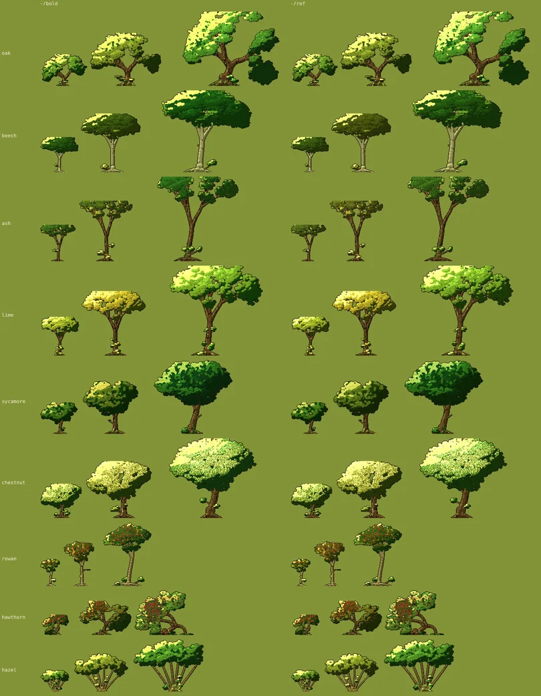
Areas as recipes
An area type started as Ed's table of 30, each with a floor, wall objects, small objects, big objects, a set piece and a creature. On the first evening #11 gave each one a layout: a pattern (scatter, groves, rows, rings, thicket, lone, stands or edge-only), density, clumping, glades, a height mix, lean, terrain, decorations and a one-line feel. #156 grew each area's floor from a ground genome in the same stamp language as the plants: 20 floor kinds, each with its own tones, patches and scatter, in several variants so the tile stops visibly repeating.
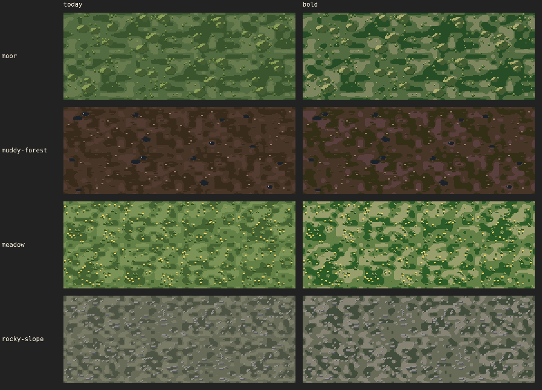
Then #161 made a whole area type writable as one object of data, an area recipe in art/recipes/. The proofs followed. The fen #183 became a 31st area type with its creature, the newt, a new species written as data on the existing four-legged builder. No new code draws or runs either. The heronry and the heron #222 were the second, on a new heron builder with slender stilt legs #271.
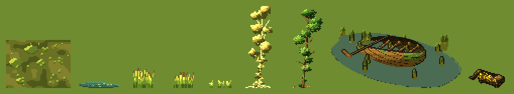
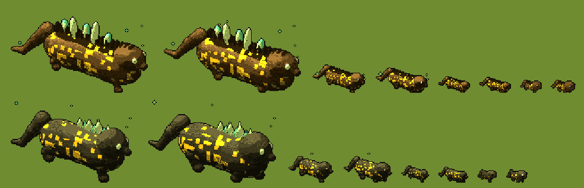

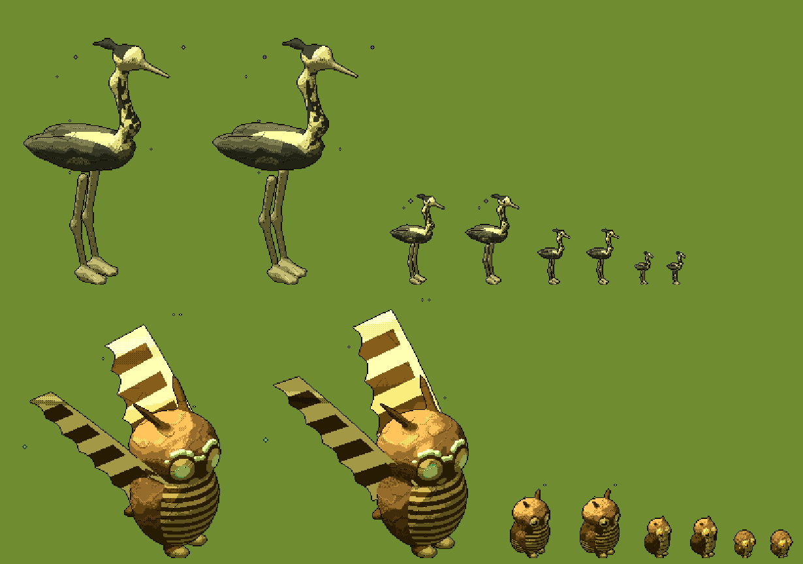

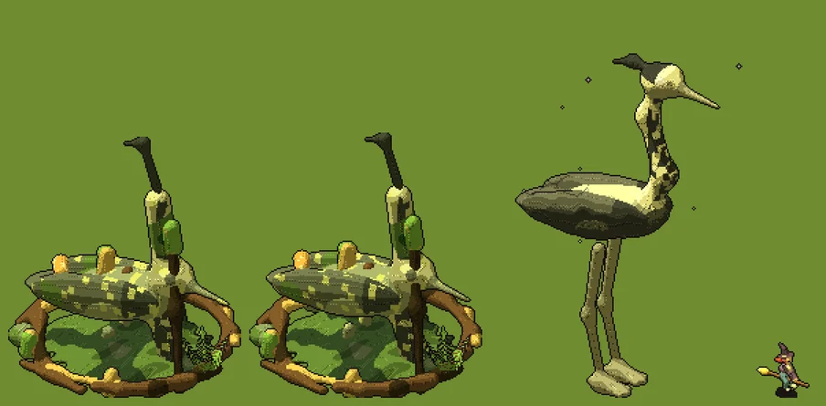
Props and set pieces from seeds
The art director's review of the first art pass found props that didn't read. The moor's standing stones looked like beige pine cones, its cairns like haystacks, one pool sprite was repeated everywhere, and a broken trunk looked like a stump with a stick laid beside it. The prop generator #142 was the answer. art/props/genomes.js gives each kind its ranges in metres, its weighted choices and its colours, and propPiece(kind, { seed }) builds a variant in 3D at the witch's scale. A standing stone became a plain grey slab, 3.4 to 5 m tall, leaning, its top slanted, rounded, notched or snapped off. Fallen logs, mushroom rings and stone circles followed #180, then boulders and mounds #201, then the party's bunting, balloons and lanterns #191, bridges #207 and fingerposts #214.

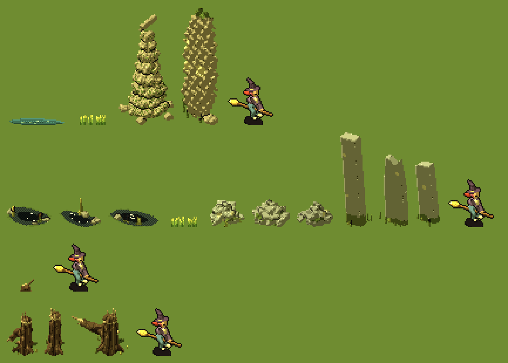

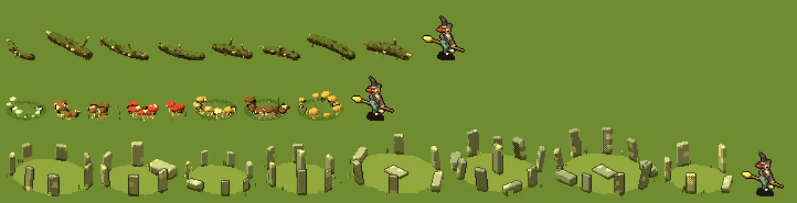

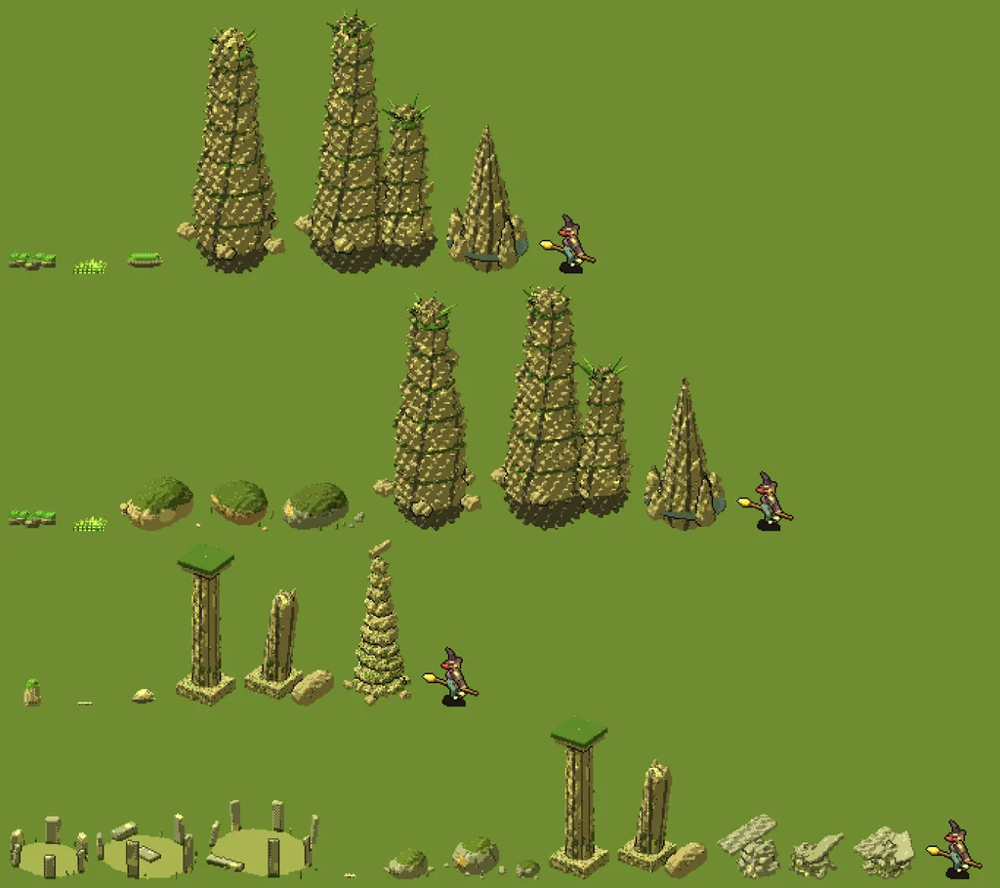
For a new area to have a landmark of its own, art builder 1 asked for generated set pieces. #204 added four kinds, punts, jetties, rings and heaps, each 6 to 12 m across, taking its mud and moss from the area's own ground. The fen's sunken punt and the heronry's jetty are both grown this way. On the morning of 6 October #221 put the prop generator on by default, labelled "DECISION FOR ED" for his OK; ?props=hand still brings the hand-made props back for comparison.
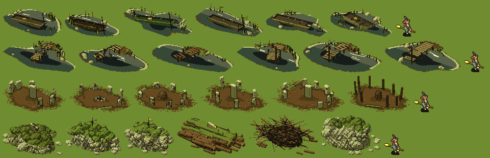
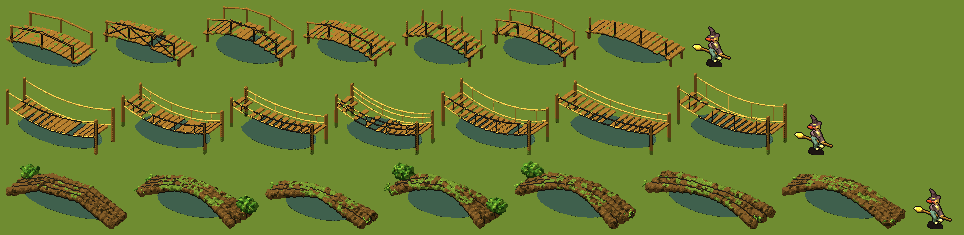
The witch genome
Ed's backlog note on #79 was "As part of the procedural animal generation, we could consider procedural witch generation. Different size hat, broom, cloak, accessories." #98 made the witch a genome in art/witchGenome.js: her hat (shape, crown height, brim, lean, band), hair, top, cloak, broom (bristle kind, handle length and bend), accessories and a palette per part. WITCH_GENOME is our witch and draws her exactly. witchGenome(seed) makes a new witch within limits that keep her a witch: always a pointed hat with a glowing band broad enough to show, always a broom, and a palette worked from one base hue so the dark hat lets the band shine.
Ed's answers came back quickly: "the generated witches replace the party witches' outfits", "Bigger brims. Longer cloaks." and "Accessories both witchy and modern." #123 made every party witch a generated witch, with brims up to 1.9 times hers and cloaks up to 1.75 times. For the character creator Ed asked for "the option to have no hat, and some different hats; top hat, cowboy hat, chinese farmer hat, deely boppers, party hat, musketeer hat - be creative": #134 widened the sliders and art builder 3 drew the hats, a crown and a traffic cone among them. On 6 October Ed asked for "some different kinds of broom; a missile, a curled tip, handlebars, hobby horse, jet bike, oar, mop, pitchfork, canoe, wicker basket, ladder, speeder bike, bicycle, quad drone", later adding a gyrocopter and dropping the basket. #288 drew all fourteen in every flight pose, with flames that glow and rotors and wheels that turn.

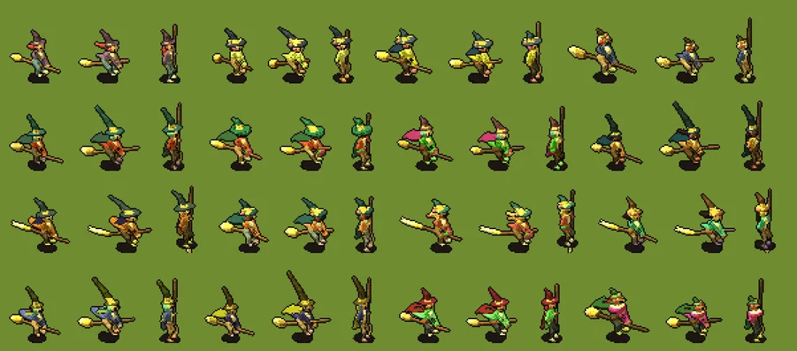

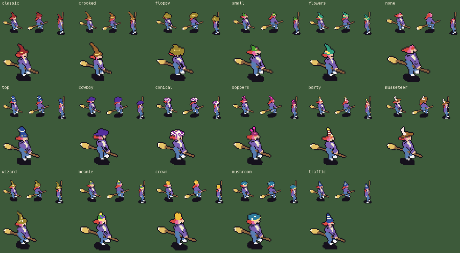

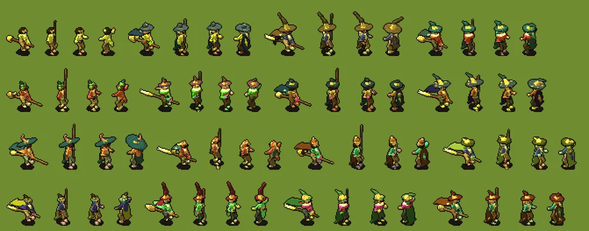
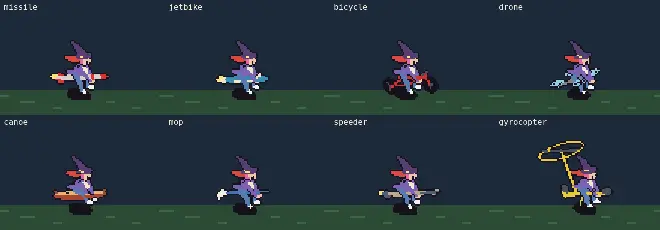
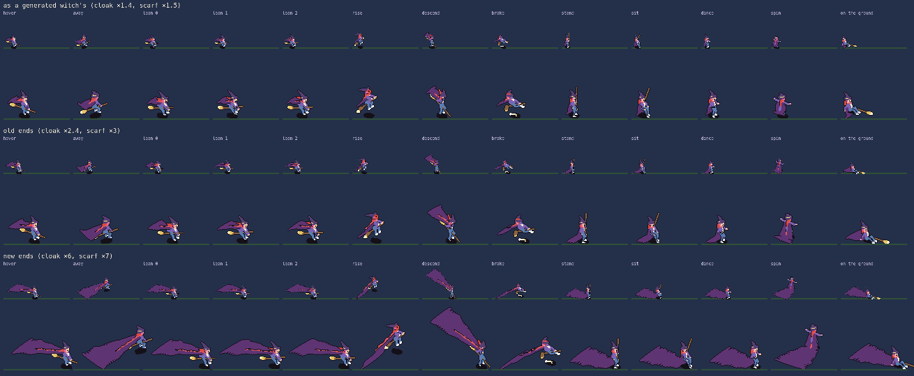
The stylise pass
The generators settled the shapes. The stylise pass settles the pixels. Ed's main art note on 5 October was "everything should look a bit more pixel-art stylised" (about the legends, "the more pixellated version is better"). A role arrived to answer it: the art director, a builder session that reviews the whole picture rather than one asset. It started the living style guide, docs/ART-GUIDE.md #120, which every builder reads before an art batch.
#121 turned "more pixel-art" into a stylisation ladder: the same set of creatures, trees and props drawn at each rung.
| Rung | What changes |
|---|---|
| 0 Now | 3 value bands with a checker dither where bands meet; a dark outline |
| 1 Clean | The same bands, no dither, lone pixels merged |
| 2 Stylised | 3 hue-shifted tones per material and a selective outline |
| 3 Bold | Rung 2 with tones grouped into clusters, not noise |
| 4 / 5 | Rung 3 at art pixel 4 or 5 |
| 6 Reference | Ed's boar reference: one tone family, cream light as a big shape, red-brown shadow, strong near-black outline with interior lines |
Ed's answer: "4 or 5, but we will decide in playtesting", then "6 is also good". #127 put both looks into the real game as switches: ?style=bold|ref and ?px=3|4|5. art/stylise.js runs inside bake on every sprite: trees, tufts, props, creatures, legends, witches and the ground. It takes the light from the sprite's own normals and turns it into three tones per material. Shadows lean blue-violet or red-brown, deeper and more saturated; lights lean cream. It then groups the tones into clusters, merges lone pixels, draws the outline inside the sprite's own size, and flattens the normals, so the game's coloured lights tint the sprite without banding it a second time. Bushes #147 and tufts #150 learned to draw in fewer, bolder stamps.
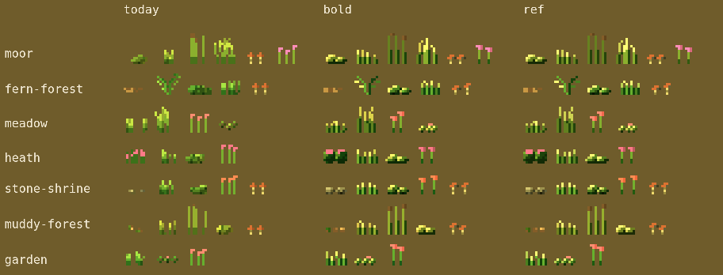
On 6 October #253 made bold the default:
I think I prefer bold style, but it's actually quite hard to tell them apart in practice.Ed, 2026-10-06, on #253
Ed had settled the pixel size on day one ("bigger pixels, babies can be small"): one art pixel of 3 screen pixels for everything, still the default; 4 and 5 are a link parameter away. The rule underneath held throughout: every asset is drawn at the same art pixel and shown at a whole multiple, never resampled, and that held down to small things. #330 redrew the spinning 💌s and the ley line in whole art pixels instead of rotating them smoothly.
Lighting the night
The art builders worked on the night in two halves: lighting it, then making it readable. Much of it was art builder 3's, worked from the art director's overnight review loop #177. That loop took the same screenshot set every round (seed 123, the creator room, home, four areas on the ground and from the treetops, a fight), critiqued the whole picture and sent briefs to the builders. It started from Ed's brief: "Look at lighting in different scenes and try and make it a spooky dark forest with a party in it."
- A cold dark wood #184: blue-green shadows, a colder moon, violet fog from 60 m and a grade draining the darks toward cold blue, so the party is the warm light you fly towards.
- The party's warm pools #189: soundsystems in amber, pink and gold instead of cyan and violet, and more lanterns lit.
- Each area its own mood #195: misty teal over the bog, violet-grey in the dead woods, rosy in the garden, eased as she flies.
- A moonlight rim #199: a one-pixel blue-violet edge on every character, so the witch and the animals read against the dark.
- Moon on the treetops #208: the moon's fill on anything facing up. Measured from the treetops over the moor, the middle band's mean value went from 0.05 to 0.11.
- A paler fill #220: a pale green-cyan fill so each floor keeps its hue, no checker-dither "screen door", and the witch lit in the bold style. Her own light pool turned amber instead of lime (#217, #260).
- Smoke #236, for Ed's "Fires should produce puffs of smoke that rise high into the sky before dissipating"
- One moon #252: the sky, the moonlight and the dancefloor's twilight tiles share one moon, with phases, a way across the sky and now and then a red, blue or gold moon.
- Ponds that read as water #257: a moonlit rim, a sheen of sky, a muddy lip and glints. Then the legend circles' rim kit #262, where weighted dealing replaced random picks so wooded rims stopped being all stones.
- Slowed time's look #307: inside a legend's circle the world outside greys, cools and hangs, and a 💌 that leaves it sparkles out.
- Legends you can find #334, for Ed's "Legends in the circle are not very distinct": the sleeping form outlined in its sigil's neon, a light floor, a soft glow on the ground.
- Nothing past the bend #358, for Ed's "I shouldn't see anything on the ground that's obscured when it goes past the bend": the farthest overlays no longer fold back down past the horizon.

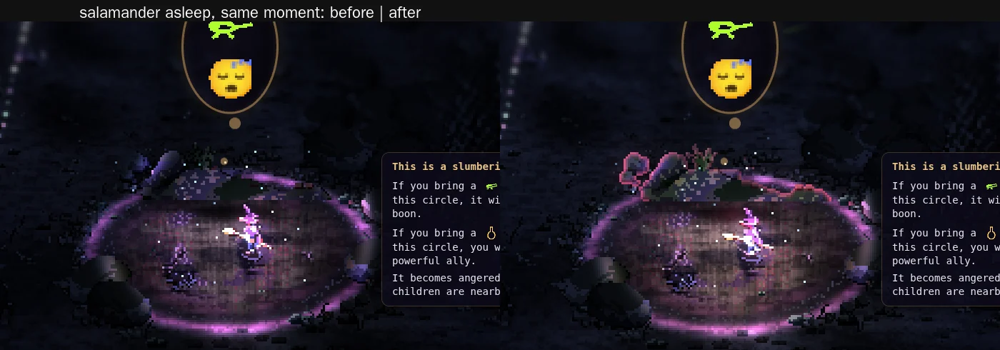

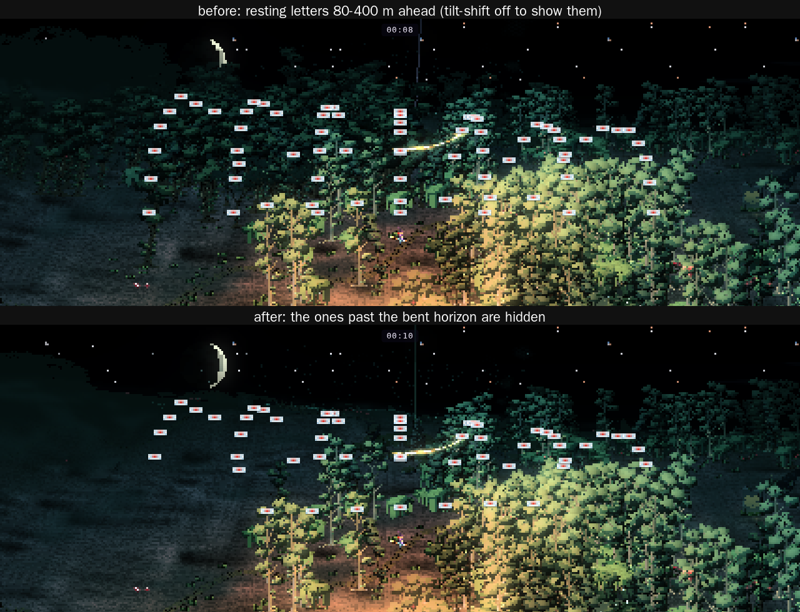

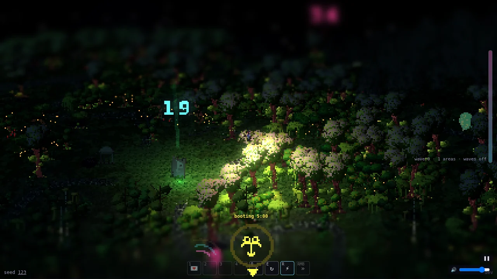

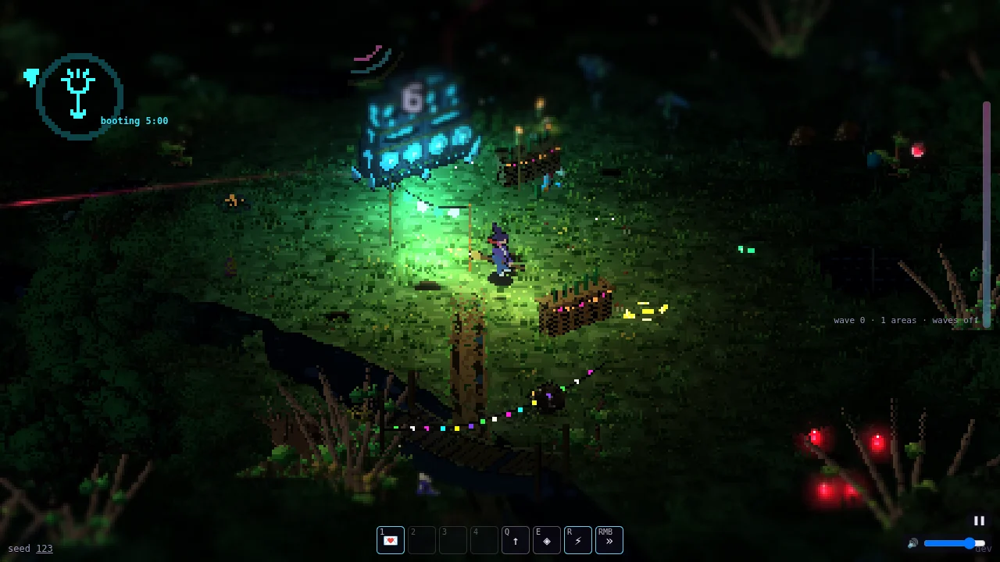

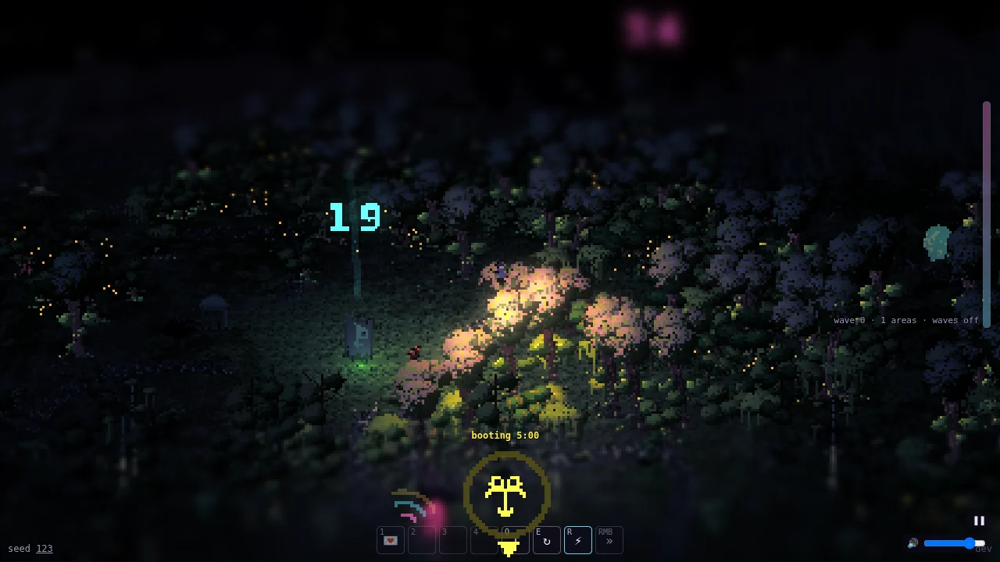

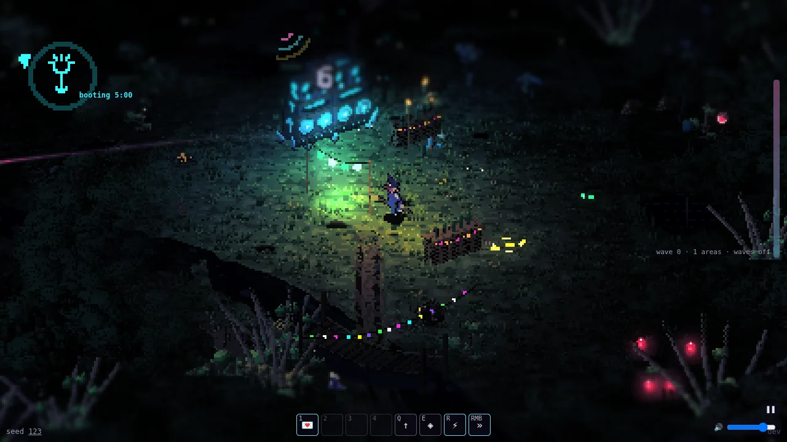

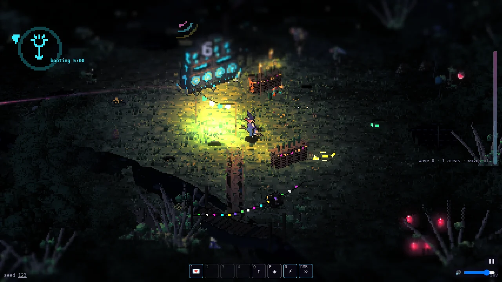

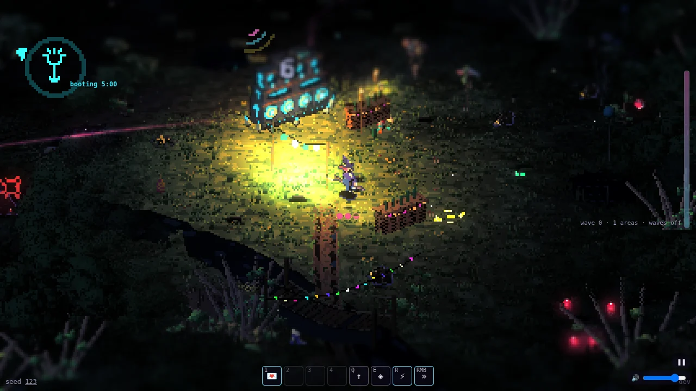


The legend work was still going as this was written. #363, opened in the small hours of 7 October, draws a sleeping legend as the animal itself asleep, using the nap art, at the scene's own pixel size and with stepped light.
Tilt-shift, and seeing her under the trees
The tilt-shift was in from the first prototype. DESIGN.md records it: the view is blurred towards the top and bottom of the screen "so the forest looks like a miniature (Ed, 2026-10-03)", citing Octopath Traveler as proof that tilt-shift and pixel art can mix. On the first day the builders offered the blur before or after the pixel upscale and recommended before, so every pixel stays square; the game still blurs before.


It kept being tuned. Ed asked to "Lessen the tilt-shift effect until you can see the stars", then corrected it: "The stars don't have to be crisp, just perceptible." #249 gave the sky only 0.3 of the blur. In round 14 Ed noticed "Invitations are not affected by the tilt shift", because the 💌s, hearts and bubbles are HTML laid over the canvas. #325 blurs each one by its height on screen. Finally Ed asked to "reduce the intensity of the tilt-shift effect", and #349 halved it (1.5 pixels on the ground, 3 from the treetops) and widened the sharp band.
The canopy cut-out, the hole opened in the treetops so you can see her on the ground, took four goes. First Ed saw "concentric circles while moving through dense forests in ground mode" #258: every crown carried the same circular fade, and in a thick canopy the fades lined up into rings. Fading each crown by its middle fixed that, until round 14: "canopy cut-out circle is still very sharp" #326, answered by a soft, wide, wobbling fade. Then came Ed's screenshot captioned "circle". #357 fades each crown and its trunk as one, with a ragged outline of bays and points that drifts slowly round her, so nothing is sliced along an arc.


What keeps it honest
Because everything is generated, everything can be tested. The art check (node art/check.mjs) grew into one of the longest paragraphs in the project's builders' handbook: size steps, silhouettes 0.15 apart, masks equal to their bakes, every tree matching its fingerprint, trunk feet still in the wind, expressions that differ from neutral, only magical materials glowing, no lone flecks on the witch, every party shoe on a hoof, a paw and a claw.
Next to the check sits tools/genome/compare.mjs, which draws every creature sprite against an old checkout of the art. That made the big refactors safe. "No change in the art" was a number, 1,560 of 1,560 or 736 of 736, not a promise.
The art guide's own summary of Ed's direction explains why the effort went into tools: everything will eventually come from generators, aiming at 100 or more area types, so "we should make good and flexible tools now, and learn as much as we can about what looks good."
More pictures